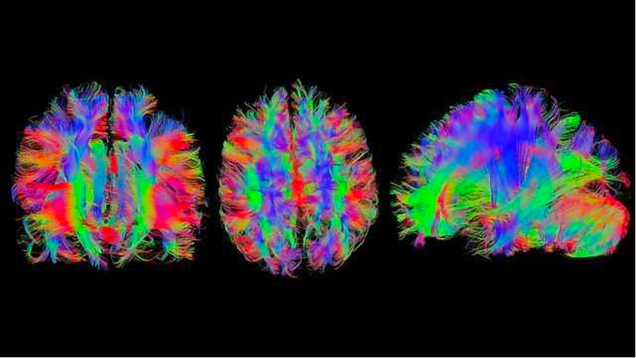
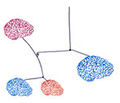

Observing and interacting with art, music, dance and even nature can induce emotions and responses within us, but how can we scientifically explain our aesthetic experiences? Can objectively studying aesthetics fully capture the essence of a subjective aesthetic experience?
Researchers have been tackling questions like this for decades, and as a result, a large body of literature suggests that there is a gap between aesthetic science and aesthetic experience.
Alexis Makin, a researcher at the University of Liverpool, recently wrote a paper with the same title and argued that we can’t capture aesthetic experience’s powerful and sublime feelings. Despite aesthetic science's significant advancements in comprehending the mechanisms and guiding principles of aesthetic perception, peak experiences are difficult to bottle up and capture in a well-controlled environment, such as an experimental lab. Makin suggests that to bridge the gap between the actual perception of beauty and the scientific study of aesthetics, a new, more subtle method is required.
Makin's findings are not unique. In a study on the neurological underpinnings of aesthetic experience, fellow neuroaesthetics researcher Anjan Chatterjee (2011) contends that the brain regions involved in processing aesthetic information are not solely devoted to this function but also play a role in other cognitive processes. This shows that aesthetic experience is not a distinct brain function but rather a multifaceted, interconnected process involving a variety of brain regions and functions.

Other researchers have also found that distilling the religiosity of profound aesthetic experiences is challenging. Researchers Leder and Nadal (2014) agree, contending that a variety of elements, such as individual differences, social and cultural context, and emotional state, influence how we perceive beauty. This means that the contextual and personal aspects that influence people's individual aesthetic experiences must be taken into account while studying aesthetics.
In his talk at Goldsmiths in early 2023, Makin challenged the methodological implications by stating that “aesthetic experiences occasionally happen, but we can’t make them happen”. This sits in agreement with psychologist Arthur Shimamura, who claims that aesthetic experience is not produced by normal events because this emotion is not adaptive and utilitarian. Rather, aesthetic experiences are unusual and differ from daily feelings. What happens when all of these preferences overlap? The more elements researchers add to stimuli, the more difficult it is to sort through the order effects of each stimulus on their own. However, aesthetic experiences are composed of inherently complex stimuli interactions. This is the crux of his critique of empirical aesthetics which he calls the Gestalt nightmare.
An aesthetic experience is more than the sum of its parts. Like any statistical model, the interaction of its parts may be crucial to its significance. By nature, the scientific method is only able to make meaningful claims about isolated parts of an aesthetic experience, such as individual stimulus properties. However, aesthetic scientists can't predict multidimensional preferences, because this involves complex interactions of stimulus properties, environment, cultural context, and more.
An additional dilemma in the gap between aesthetic science and experience is a dispute on the semantics of what is even meant by aesthetic experience: is it every aesthetic response to everything we see? Is there a threshold of intensity that a response should surpass to be called an aesthetic experience?

In Makin's talk, he suggested aesthetic experience is difficult to measure because even ordinary emotions are quite difficult to investigate. For example, there are many ways to measure emotions, such as self-report, physiological measures, and facial expressions (Mauss & Robinson, 2009). However, measures are poorly correlated and not necessarily “diagnostic.” To exemplify this, think about the elusive nature of happiness - we cannot say whether people are happy or not just because they are smiling.
One approach taken was to not look at the “hot” affective and laden component, but rather at an individual's “cold” evaluation of a stimulus. However, even a reductionist approach, as Makin cited Holmes and Zanker (2012), will never be able to explain the interactions that influence our aesthetic evaluations. While science has made limited claims of universal preferences, science fails at predicting multidimensional stimuli. This then begs the question: where is the construct reliability in the research of aesthetic experiences?
If aesthetic experiences are so profoundly important to human existence, then surely they’re worth investigating. Clearly, this is easier said than done, so how might aesthetic research continue to progress? A more thorough and multidisciplinary strategy that incorporates knowledge from sociology, psychology, and other disciplines is one option. For instance, Koneni (2005) contends that the cognitive, affective, and motivational processes that underpin aesthetic perception should be taken into consideration in a psychological model of aesthetic experience. Another strategy is to employ more qualitative and experiential techniques that try to record the individual perception of beauty. For instance, researchers Leder, Belke, Oeberst, and Augustin (2004) investigated the subjective perception of beauty in daily life using an experience sampling method.
Perhaps, the diversity and variety of unique aesthetic experiences cannot be entirely captured by aesthetic science alone. Although it may be a demanding undertaking, great progress has been made in understanding the underlying mechanics and principles of aesthetic perception. The persistent discrepancies between aesthetic science and aesthetic experience do necessitate more thorough and nuanced approaches to encompass its myriad of interactions. The gap between aesthetic science and aesthetic experience must therefore be filled by using a more multidisciplinary and phenomenological or experiential approach. In conclusion, adequately understanding the profound nature of beauty and aesthetic enjoyment while acknowledging the limitations of objective knowledge renders aesthetic research an ambitious - yet worthwhile - undertaking.
Chatterjee, A. (2011). Neuroaesthetics: A coming of age story. Journal of Cognitive Neuroscience, 23(1), 53-62.
Leder, H., Belke, B., Oeberst, A., & Augustin, D. (2004). A model of aesthetic appreciation and aesthetic judgments. British Journal of Psychology, 95(4), 489-508.
Leder, H., & Nadal, M. (2014). Ten years of a model of aesthetic appreciation and aesthetic judgments: The aesthetic episode–Developments and challenges in empirical aesthetics. British Journal of Psychology, 105(4), 443-464.
Makin, A. D. J. (2019). The gap between aesthetic science and aesthetic experience. Cognitive Science, 43(S3), e12777.
Mauss, I., & Robinson, M. (2009). Measures of emotion: A review. Cognition and Emotion, 23(2), 209-237.
Shimamura, A. P. (2012). Toward a science of aesthetics: Issues and ideas. In A. P. Shimamura & S. E. Palmer (Eds.), Aesthetic science: Connecting minds, brains, and experience (pp. 3–28). Oxford University Press.